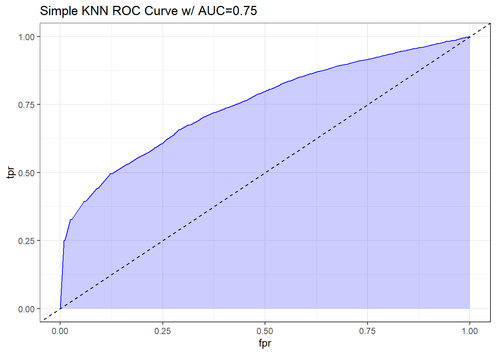
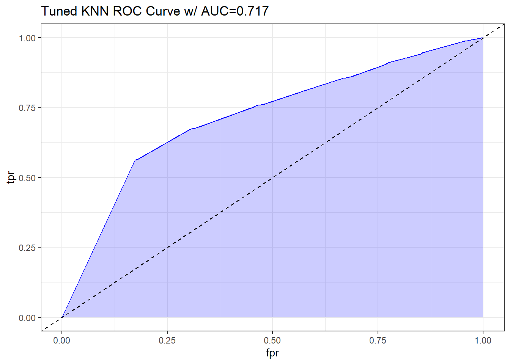

5 K-Neareast Neighbor (KNN)
5.1 Introduction
Below paragraph is copied from the assignment, we are planning on updating this as we formulate our narrative for the final deliverable:
KNN can be particularly useful for classification tasks as it identifies the closest training samples (neighbors) in feature space relative to a given test instance, and subsequently employs the labels or values of these neighbors to make predictions. however, KNN is highly sensitive to outliers and can easily lead the model to overfit due to noises.
In an attempt to apply two distinct KNN models, we will initiate with a K value equal to the square root of the training set size, which is common practice. Additionally, we will experiment with another K value to assess its potential impact on our model.
5.2 Load Data
# Load data
train_knn_x <- read.csv('Train Test Set/train_knn_x.csv')
train_knn_y <- read.csv('Train Test Set/train_knn_y.csv')
test_knn_x <- read.csv('Train Test Set/test_knn_x.csv')
test_knn_y <- read.csv('Train Test Set/test_knn_y.csv')
# Display statistics
str(train_knn_x)## 'data.frame': 10379 obs. of 26 variables:
## $ gender_female : int 1 1 1 0 1 1 1 0 1 1 ...
## $ gender_male : int 0 0 0 1 0 0 0 1 0 0 ...
## $ age : num 0.213 0.426 0.106 0.106 0.234 ...
## $ fam_history_overweight1 : int 1 1 1 1 1 1 1 1 1 0 ...
## $ freq_consumption_hc_food1 : int 1 1 1 1 1 1 0 1 1 0 ...
## $ veg_freq : num 1 0.552 1 1 1 ...
## $ num_meals : num 0.667 0.659 0.667 0.667 0.667 ...
## $ food_between_meals_frequently : int 0 0 0 0 0 0 0 0 0 1 ...
## $ food_between_meals_never : int 0 0 0 0 0 0 0 0 0 0 ...
## $ food_between_meals_sometimes : int 1 1 1 0 1 1 1 1 1 0 ...
## $ smoke1 : int 0 0 0 0 0 0 0 0 0 0 ...
## $ water_daily : num 0.736 0.482 0.933 1 0.932 ...
## $ caloric_beverages1 : int 0 0 0 1 0 0 0 0 0 0 ...
## $ activity_freq : num 0.0557 0.3292 0.4882 1 0.0883 ...
## $ tech_use : num 0.243 0 0.328 0 0.337 ...
## $ alcohol_never : int 0 0 0 0 0 0 0 0 0 0 ...
## $ alcohol_sometimes : int 1 1 1 1 1 1 1 1 1 1 ...
## $ transport_bike : int 0 0 0 0 0 0 0 0 0 0 ...
## $ transport_motorbike : int 0 0 0 0 0 0 0 0 0 0 ...
## $ transport_public_transportation: int 1 0 1 1 1 1 1 1 1 1 ...
## $ transport_walking : int 0 0 0 0 0 0 0 0 0 0 ...
## $ eating_habit_binary : num 0.833 0.68 0.833 0.833 0.833 ...
## $ physical_activity_binary : num 0.336 0.598 0.562 1 0.318 ...
## $ age_group_young_adult : int 1 1 1 1 1 1 1 1 1 1 ...
## $ age_group_adult : int 0 0 0 0 0 0 0 0 0 0 ...
## $ age_group_senior : int 0 0 0 0 0 0 0 0 0 0 ...## gender_female gender_male age fam_history_overweight1
## Min. :0.0000 Min. :0.0000 Min. :0.0000 Min. :0.0000
## 1st Qu.:0.0000 1st Qu.:0.0000 1st Qu.:0.1277 1st Qu.:1.0000
## Median :1.0000 Median :0.0000 Median :0.1915 Median :1.0000
## Mean :0.5079 Mean :0.4921 Mean :0.2087 Mean :0.8177
## 3rd Qu.:1.0000 3rd Qu.:1.0000 3rd Qu.:0.2553 3rd Qu.:1.0000
## Max. :1.0000 Max. :1.0000 Max. :1.0000 Max. :1.0000
## freq_consumption_hc_food1 veg_freq num_meals
## Min. :0.0000 Min. :0.0000 Min. :0.0000
## 1st Qu.:1.0000 1st Qu.:0.5000 1st Qu.:0.6667
## Median :1.0000 Median :0.7223 Median :0.6667
## Mean :0.9166 Mean :0.7260 Mean :0.5858
## 3rd Qu.:1.0000 3rd Qu.:1.0000 3rd Qu.:0.6667
## Max. :1.0000 Max. :1.0000 Max. :1.0000
## food_between_meals_frequently food_between_meals_never
## Min. :0.0000 Min. :0.00000
## 1st Qu.:0.0000 1st Qu.:0.00000
## Median :0.0000 Median :0.00000
## Mean :0.1212 Mean :0.01253
## 3rd Qu.:0.0000 3rd Qu.:0.00000
## Max. :1.0000 Max. :1.00000
## food_between_meals_sometimes smoke1 water_daily
## Min. :0.0000 Min. :0.00000 Min. :0.0000
## 1st Qu.:1.0000 1st Qu.:0.00000 1st Qu.:0.3981
## Median :1.0000 Median :0.00000 Median :0.5000
## Mean :0.8446 Mean :0.01224 Mean :0.5146
## 3rd Qu.:1.0000 3rd Qu.:0.00000 3rd Qu.:0.7678
## Max. :1.0000 Max. :1.00000 Max. :1.0000
## caloric_beverages1 activity_freq tech_use alcohol_never
## Min. :0.00000 Min. :0.00000 Min. :0.0000 Min. :0.0000
## 1st Qu.:0.00000 1st Qu.:0.00235 1st Qu.:0.0000 1st Qu.:0.0000
## Median :0.00000 Median :0.33333 Median :0.2870 Median :0.0000
## Mean :0.03276 Mean :0.32699 Mean :0.3074 Mean :0.2461
## 3rd Qu.:0.00000 3rd Qu.:0.52884 3rd Qu.:0.5000 3rd Qu.:0.0000
## Max. :1.00000 Max. :1.00000 Max. :1.0000 Max. :1.0000
## alcohol_sometimes transport_bike transport_motorbike
## Min. :0.0000 Min. :0.000000 Min. :0.000000
## 1st Qu.:0.0000 1st Qu.:0.000000 1st Qu.:0.000000
## Median :1.0000 Median :0.000000 Median :0.000000
## Mean :0.7289 Mean :0.001734 Mean :0.001927
## 3rd Qu.:1.0000 3rd Qu.:0.000000 3rd Qu.:0.000000
## Max. :1.0000 Max. :1.000000 Max. :1.000000
## transport_public_transportation transport_walking eating_habit_binary
## Min. :0.0000 Min. :0.00000 Min. :0.0000
## 1st Qu.:1.0000 1st Qu.:0.00000 1st Qu.:0.6546
## Median :1.0000 Median :0.00000 Median :0.6667
## Mean :0.8056 Mean :0.02226 Mean :0.6877
## 3rd Qu.:1.0000 3rd Qu.:0.00000 3rd Qu.:0.8333
## Max. :1.0000 Max. :1.00000 Max. :1.0000
## physical_activity_binary age_group_young_adult age_group_adult
## Min. :0.0000 Min. :0.0000 Min. :0.00000
## 1st Qu.:0.3442 1st Qu.:1.0000 1st Qu.:0.00000
## Median :0.4573 Median :1.0000 Median :0.00000
## Mean :0.4732 Mean :0.9019 Mean :0.05222
## 3rd Qu.:0.6000 3rd Qu.:1.0000 3rd Qu.:0.00000
## Max. :1.0000 Max. :1.0000 Max. :1.00000
## age_group_senior
## Min. :0.000000
## 1st Qu.:0.000000
## Median :0.000000
## Mean :0.003276
## 3rd Qu.:0.000000
## Max. :1.000000## gender_female gender_male age fam_history_overweight1
## 1 1 0 0.2127660 1
## 2 1 0 0.4255319 1
## 3 1 0 0.1063830 1
## 4 0 1 0.1063830 1
## 5 1 0 0.2340426 1
## 6 1 0 0.2553191 1
## freq_consumption_hc_food1 veg_freq num_meals food_between_meals_frequently
## 1 1 1.0000000 0.6666667 0
## 2 1 0.5516675 0.6593030 0
## 3 1 1.0000000 0.6666667 0
## 4 1 1.0000000 0.6666667 0
## 5 1 1.0000000 0.6666667 0
## 6 1 1.0000000 0.6666667 0
## food_between_meals_never food_between_meals_sometimes smoke1 water_daily
## 1 0 1 0 0.7364515
## 2 0 1 0 0.4822175
## 3 0 1 0 0.9327950
## 4 0 0 0 1.0000000
## 5 0 1 0 0.9317565
## 6 0 1 0 0.1737795
## caloric_beverages1 activity_freq tech_use alcohol_never alcohol_sometimes
## 1 0 0.05569533 0.2434340 0 1
## 2 0 0.32917367 0.0000000 0 1
## 3 0 0.48822467 0.3277855 0 1
## 4 1 1.00000000 0.0000000 0 1
## 5 0 0.08827700 0.3366050 0 1
## 6 0 0.07248500 0.3126750 0 1
## transport_bike transport_motorbike transport_public_transportation
## 1 0 0 1
## 2 0 0 0
## 3 0 0 1
## 4 0 0 1
## 5 0 0 1
## 6 0 0 1
## transport_walking eating_habit_binary physical_activity_binary
## 1 0 0.8333333 0.3360436
## 2 0 0.6802073 0.5975042
## 3 0 0.8333333 0.5618206
## 4 0 0.8333333 1.0000000
## 5 0 0.8333333 0.3183242
## 6 0 0.8333333 0.3184210
## age_group_young_adult age_group_adult age_group_senior
## 1 1 0 0
## 2 1 0 0
## 3 1 0 0
## 4 1 0 0
## 5 1 0 0
## 6 1 0 0## 'data.frame': 10379 obs. of 1 variable:
## $ x: int 1 1 1 1 1 1 1 1 1 0 ...## x
## Min. :0.0000
## 1st Qu.:0.0000
## Median :1.0000
## Mean :0.7262
## 3rd Qu.:1.0000
## Max. :1.0000## x
## 1 1
## 2 1
## 3 1
## 4 1
## 5 1
## 6 15.3 Model KNN
5.3.1 Default KNN
We will use the square root of the number of rows in the train set as an initial value for parameter k. Next, we will employ grid search to optimize our KNN model and examine if we can enhance its accuracy and overall fit.
# Set seed for reproducibility
set.seed(12345)
# Build a model
model_knn <- knn(train = train_knn_x,
test = test_knn_x,
cl = train_knn_y$x,
k = sqrt(nrow(train_knn_x)),
prob = TRUE)
prediction_knn_probability <- attributes(model_knn)$prob## 0 1
## 2218 81615.3.2 Tuned KNN
We will execute a grid search with 10-fold cross validation.
# Set seed for reproducibility
set.seed(12345)
# Set up control parameters
ctrl <- trainControl(method = 'cv',
number = 10)
# Define the tuning grid
grid <- expand.grid(k = seq(1, 20, by = 1))
# Tune the model
knn_tuned <- train(x = train_knn_x,
y = train_knn_y$x,
method = 'knn',
trControl = ctrl,
tuneGrid = grid)
# Store best parameter
best_k <- knn_tuned$bestTune$k
# Build a model
model_knn_tuned <- knn(train = train_knn_x,
test = test_knn_x,
cl = train_knn_y$x,
k = best_k,
prob = TRUE)## [1] 16## 0 1
## 2498 7881According to the results, the optimal value of k is 9.
5.4 Evaluate KNN
5.4.1 Default KNN
# Make a prediction
prediction_knn <- model_knn
prediction_knn_probability <- attributes(prediction_knn)$prob
summary(prediction_knn_probability)## Min. 1st Qu. Median Mean 3rd Qu. Max.
## 0.5000 0.7723 0.9109 0.8657 0.9802 1.0000# Perform confusion matrix
cm_knn <- confusionMatrix(as.factor(prediction_knn),
as.factor(test_knn_y$x), positive = '1')
cm_knn## Confusion Matrix and Statistics
##
## Reference
## Prediction 0 1
## 0 1688 530
## 1 1075 7086
##
## Accuracy : 0.8454
## 95% CI : (0.8383, 0.8523)
## No Information Rate : 0.7338
## P-Value [Acc > NIR] : < 2.2e-16
##
## Kappa : 0.5776
##
## Mcnemar's Test P-Value : < 2.2e-16
##
## Sensitivity : 0.9304
## Specificity : 0.6109
## Pos Pred Value : 0.8683
## Neg Pred Value : 0.7610
## Prevalence : 0.7338
## Detection Rate : 0.6827
## Detection Prevalence : 0.7863
## Balanced Accuracy : 0.7707
##
## 'Positive' Class : 1
## Based on the confusion matrix, we observe that the model achieves an accuracy of 0.8454, sensitivity of 0.9304, and a Kappa coefficient of 0.5776. We will assess these results towards the conclusion of the assignment when we have completed stacked models.
pred <- ROCR::prediction(prediction_knn_probability, test_knn_y$x)
perf <- ROCR::performance(pred, measure = "tpr", x.measure = "fpr")
auc <- ROCR::performance(pred, measure="auc")
auc <- round(auc@y.values[[1]],3)
roc.data <- data.frame(fpr=unlist(perf@x.values),
tpr=unlist(perf@y.values),
model="GLM")
ggplot(roc.data, aes(x=fpr, ymin=0, ymax=tpr)) +
geom_ribbon(alpha=0.2, fill = "blue") +
geom_line(aes(y=tpr), col = "blue") +
geom_abline(intercept = 0, slope = 1, lty = "dashed") +
labs(title = paste0("Simple KNN ROC Curve w/ AUC=", auc)) +
theme_bw()
5.4.2 Tuned KNN
# Make a prediction
prediction_knn_tuned <- model_knn_tuned
prediction_knn_tuned_probability <- attributes(prediction_knn_tuned)$prob
summary(prediction_knn_tuned_probability)## Min. 1st Qu. Median Mean 3rd Qu. Max.
## 0.5000 0.7647 0.9375 0.8771 1.0000 1.0000# Perform confusion matrix
cm_knn_tuned <- confusionMatrix(as.factor(prediction_knn_tuned),
as.factor(test_knn_y$x), positive = '1')
cm_knn_tuned## Confusion Matrix and Statistics
##
## Reference
## Prediction 0 1
## 0 1893 605
## 1 870 7011
##
## Accuracy : 0.8579
## 95% CI : (0.851, 0.8646)
## No Information Rate : 0.7338
## P-Value [Acc > NIR] : < 2.2e-16
##
## Kappa : 0.6248
##
## Mcnemar's Test P-Value : 6.244e-12
##
## Sensitivity : 0.9206
## Specificity : 0.6851
## Pos Pred Value : 0.8896
## Neg Pred Value : 0.7578
## Prevalence : 0.7338
## Detection Rate : 0.6755
## Detection Prevalence : 0.7593
## Balanced Accuracy : 0.8028
##
## 'Positive' Class : 1
## Based on the confusion matrix, we observe that the model achieves an accuracy of 0.8579, sensitivity of 0.9206, and a Kappa coefficient of 0.6248. We will assess these results towards the conclusion of the assignment when we have completed stacked models.
pred <- ROCR::prediction(prediction_knn_tuned_probability, test_knn_y$x)
perf <- ROCR::performance(pred, measure = "tpr", x.measure = "fpr")
auc <- ROCR::performance(pred, measure="auc")
auc <- round(auc@y.values[[1]],3)
roc.data <- data.frame(fpr=unlist(perf@x.values),
tpr=unlist(perf@y.values),
model="GLM")
ggplot(roc.data, aes(x=fpr, ymin=0, ymax=tpr)) +
geom_ribbon(alpha=0.2, fill = "blue") +
geom_line(aes(y=tpr), col = "blue") +
geom_abline(intercept = 0, slope = 1, lty = "dashed") +
labs(title = paste0("Tuned KNN ROC Curve w/ AUC=", auc)) +
theme_bw()